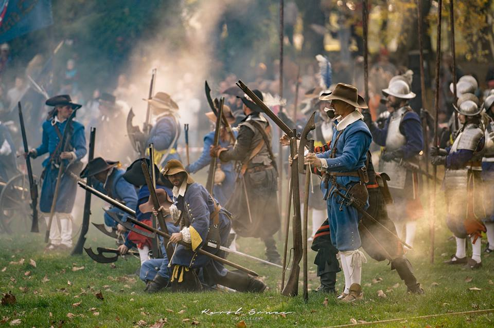

Reenacting means recreating historical events. There is a wide range of various reenacting events. It can be a specific recreated battle or whole period in general. It can be a coronation or any other important event from our history which can be recreated. During a reenacting event, there are little towns built out of tents, people chatting around wooden tables, kids playing historical games.
 Reenacting events are performed by reenactors. Reenactors participate in reenacting events in their free time. This is is a hobby mostly common amongst people who love history. They are dressed in historical costumes and performing what the life centuries ago looked like. They sleep in tents and eat food as people used to eat before. Reenacting is not limited by age. People of all ages participate during a reenacting event. Kids are usually brought by their parents and they are used to take part in events from a young age.
Reenacting events are performed by reenactors. Reenactors participate in reenacting events in their free time. This is is a hobby mostly common amongst people who love history. They are dressed in historical costumes and performing what the life centuries ago looked like. They sleep in tents and eat food as people used to eat before. Reenacting is not limited by age. People of all ages participate during a reenacting event. Kids are usually brought by their parents and they are used to take part in events from a young age.

History of reenactment started already in ancient Rome. The Romans staged recreation of their famous battles within their amphitheaters. In the Middle Ages people used to stage various themes from Ancient Rome. Reenactment started being popular in the 17th century in England. The first reenacting battle was staged in 1638 by Lord James ‘Jimmy’ Dunn of Coniston. It was a battle between Christian and Muslim forces. In the 19th century happened that reenactment became widespread. Romanticism in England supported the reenacting of the Napoleonic War, mainly the Battle of Waterloo. Veterans of American Civil War recreated battles to remember those who fell and to teach others what was it all about. In Russia, people recreate the Siege of Sevastopol or the Battle of Borodino to remember important parts of their history.
.png)